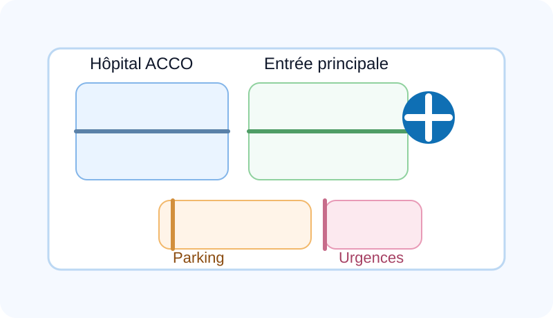

Contact
Retrouvez nos coordonnées et prenez contact avec nos services pour chaque besoin.
Adresse
Rue du quiae, sud Haiti
Téléphone
Heures d’ouverture
Notre accueil est ouvert tous les jours de 08:00 à 18:00. Les urgences restent disponibles 24h/24.
Localisation (GPS)
Vous pouvez déplacer le marqueur ou ouvrir la carte en plein écran.

Voir sur OpenStreetMap